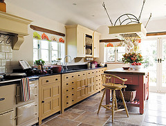

Don't be Afraid of Color!
One of the biggest trends right now is mixing textures and colors. Don't be afraid to mix color into places unexpected! Kitchen islands are a great way to bring in color without having to redo everything. Painting just the island really makes it stand out and brings unexpected character. Feeling really adventurous? If you are picking out new kitchen cabinets, you may want to consider something different than the standard stains. Ask your contractor about some of the new finishes available. Painted and distressed finishes can really warm up a new kitchen and make it feel like home.